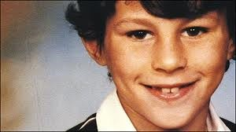

Chương 20

on “lớn” để lại cho Alex Ferguson một đội hình khá bạc nhược. Ray Wilkins và Mark Hughes đã bị bán mất, cầu thủ vào hạng “sao số” ở đội chỉ còn có Bryan Robson, Norman Whiteside, Paul McGrath, Gordon Strachan và Jesper Olsen. Éo le hơn nữa, Robson, Whiteside, và McGrath lại là ba cái “hũ chìm”, đồng thời sở hữu những đôi chân pha lê, liên tục dính chấn thương.
Bryan Robson đeo băng đội trưởng ở cả United lẫn ĐTQG Anh, được người hâm mộ trìu mến gọi là “tuyệt thế thủ quân”. Anh có tầm hoạt động rộng, nhãn quan chiến thuật sắc sảo và khả năng công thủ toàn diện: Kiến tạo tốt, ghi bàn giỏi, thu hồi bóng cũng tài. Nhận xét về Robson, Alex Ferguson không tiếc lời ngợi ca “Cậu ta là một tấm gương về lòng tận tụy, một con người phi thường, có thể vượt qua mọi giới hạn trên sân cỏ”.
Khi sung sức, một mình Robson có thể gánh United trên vai. Vấn đề là anh thường xuyên nghỉ dài hạn vì chấn thương, và ham thích rượu bia. Tuy vậy, trong số những “bợm nhậu” của Old Trafford, anh là người uống ít nhất. Đặc biệt hơn nữa, rượu dường như không bào mòn được thể lực và tinh thần của Robson. Người khác uống vào thì chân nam đá chân chiêu, Robson uống xong lại ra sân tập như điên, càng tập càng hăng! Do đó, anh là người duy nhất tại United được HLV trưởng du di về mặt kỷ luật. Alex vẫn nhắc nhở Robson hạn chế nhậu nhẹt, nhưng cũng không làm to chuyện. Mỗi khi không chấn thương, Robson đương nhiên có một suất đá chính.
Norman Whiteside là một thần đồng. 16 tuổi, anh đã khoác áo United. 17 tuổi 41 ngày, anh ra sân trong màu áo Bắc Ireland ở Espana 1982, trở thành cầu thủ trẻ nhất trong lịch sử World Cup. Lần đầu tiên thấy Whiteside trên sân tập The Cliff, Alex Ferguson giật mình. Ông nhận thấy nơi cầu thủ trẻ ấy những tố chất thiên tài. Phong cách của Whiteside tương tự như Juan Roman Riquelme sau này: Dù đối phương áp sát đến đâu, dù áp lực cao cỡ nào, anh vẫn điềm tĩnh, khoan thai, dùng chậm thắng nhanh, lấy tĩnh chế động. Có thể bạn sẽ thấy Whiteside rề rà,cầm bóng quá lâu. Song với kỹ thuật bậc thầy, anh cầm bóng lâu mà không để mất vào chân đối phương, và khi chuyền bóng đi thì thường là những đường chuyền sát thủ. Tiếc thay, Whiteside không bao giờ phát huy được hết tiềm năng. Mới 15 tuổi, anh đã gặp vấn đề về chấn thương. Từ 20 trở đi, đầu gối của anh mang thương tổn vĩnh viễn, không thể lành lặn hoàn toàn.
Theo Alex nhận định, Whiteside không thể hồi phục không chỉ do chấn thương quá nặng, mà một phần là bởi thiếu ý chí. Thay vì nỗ lực, anh lo đi theo đàn anh Paul McGrath, hợp thành một cặp bài trùng ăn chơi bốc trời. McGrath thì không cần phải nói, anh là hậu vệ xuất sắc nhất của United, nhưng song song đó cũng là nhân vật bất trị hàng đầu. Ở Old Trafford, có lẽ McGrath là người duy nhất không coi HLV vào đâu. Anh liên tục đến tập trễ, thích rượu lúc nào là uống lúc đó. Vì quá bê tha nên thể lực McGrath có vấn đề, hay dính phải chấn thương (tổng cộng phải phẫu thuật tám lần); những khi phải nghỉ vì chấn thương, anh lại ngồi nhà, nốc rượu càng dữ. Thật là cái vòng lẩn quẩn. Có bận McGrath say đến độ ủi xe vào vườn nhà người khác, bị tước bằng lái hai năm. Tệ hơn nữa là McGrath không hề biết hối cải. Sau mỗi lần phạm nội quy, chưa cần HLV phải lên tiếng, Whiteside đã đến xin lỗi, còn McGrath dẫu bị mắng sa sả vẫn cứ ngồi gật gù chẳng nói tiếng nào, sau đó đi ra tiếp tục…vi phạm!
La mắng, rồi phạt tiền chẳng có tác dụng, nhưng Alex không muốn bỏ rơi những viên ngọc quý, ông vẫn cố gắng “cải tạo” Whiteside và McGrath. Với Whiteside, ông gặp gỡ khuyên bảo chân tình, thậm chí còn trao cho anh băng thủ quân khi Robson vắng mặt, hy vọng anh sẽ trưởng thành hơn. Trước mặt HLV, Whiteside tỏ ra thành khẩn, song được một lúc thì đâu lại vào đấy. Với McGrath, Alex gặp vợ anh ta, nhờ khuyên nhủ chồng, ông còn “cầu viện” cả Sir Matt Busby lẫn cha xứ đến nói giúp. Tất cả đều vô hiệu. Chịu đựng được đến mùa thứ ba, Alex đành tống cả hai khỏi Old Trafford: McGrath sang Aston Villa, Whiteside sang Everton.[1]
Tại Everton, Whiteside được một tạp chí mời trả lời phỏng vấn. Họ sẵn sàng trả 50 000 bảng nếu anh bằng lòng “đá đểu” thầy cũ Ferguson. Không cần suy nghĩ, Whitesite lập tức khước từ, anh biết rõ Alex đã làm tất cả những gì có thể vì mình.
Thời gian đầu tại United là thử thách lớn giành cho Alex. Lực lượng cầu thủ thì như ta vừa thấy: Chẳng mấy khả quan. Cũng có ngôi sao, nhưng đa số là sao “pha lê”. Về mặt cá nhân, Alex cũng gặp nhiều khó khăn. Mẹ ông, bà Lizzie, qua đời, khi con trai vừa dọn sang Manchester được bốn tuần. Vừa mang tang mẹ, Alex vừa phải chịu cảnh xa vợ lìa con, do Cathy ở lại Aberdeen, lo cho các con học xong nốt học kỳ. Đến chín tháng sau, gia đình họ mới đoàn tụ ở Manchester.
Như chưa đủ rắc rối, tạp chí Star còn phanh phui ra vụ Alex lăng nhăng với cô hầu bànDeirdrie McHardy. Một vài người lên tiếng đòi sa thải Alex. Nhưng lý do gì mà sa thải? Chủ tịch Martin Edwards còn đào hoa hơn Alex rất nhiều, chẳng lẽ đòi đuổi luôn Edwards? Đúng là cựu HLV United Tommy Docherty từng bị thôi việc vì scandal tình ái, nhưng đó là một trường hợp hoàn toàn khác biệt. Docherty quyến rũ vợ đồng nghiệp, việc sa thải ông là cần thiết để giữ đoàn kết trong nội bộ.
Đến Old Trafford vào giữa mùa giải, không có tiền bổ sung lực lượng, những công cuộc cải tổ thì cần thêm thời gian, Alex đành “liệu cơm gắp mắm”, tạm hài lòng với những gì mình có. Hai trận đầu tiên dưới sự dẫn dắt của ông, United thua Oxford 0-2, hòa Norwich 0-0, rớt xuống vị trí 21! Mãi đến trận thứ ba, được chơi trên sân nhà, đội mới thắng được Queens Park Rangers (QPR) 1-0, với bàn thắng của hậu vệ Johnny Sivebaek. Từ đó, United chơi khởi sắc hơn, vượt qua Liverpool ngay ở Anfield. Tuy vậy, cuối mùa, họ chỉ xếp thứ 11.
Bầu trời Old Trafford hãy còn u ám, nhưng chí ít, một cánh én đã đến sớm, báo hiệu cho thiều quang dài mãi về sau. Một ngày đầu năm 1987, nhân viên phụ trách sân bãi Harold Wood đến gặp Alex:
-Sếp này, có một thằng bé đá bóng hay lắm, mới 13 tuổi thôi, tên là Ryan Wilson, con của cầu thủ bóng bầu dục Danny Wilson. Nó hâm mộ United, nhưng lại đang tập chung với tụi Manchester City.
Alex liền cử tuyển trạch viên Joe Brown đến “xem giò” Wilson. Sau khi nhận được đánh giá tích cực từ Brown, ông cho mời cậu bé đến The Cliff để tự mình thẩm định. Nhớ lại cảm giác khi lần đầu xem Wilson thi đấu, Alex viết “Tôi như người tìm vàng đi khắp thâm sơn cùng cốc, cuối cùng đã thấy thoi vàng óng ánh hiện ra…Wilson lướt trên sân nhẹ chẳng khác lông hồng, đôi chân như không chạm mặt cỏ”. Ông và Archie Knox đều nhất trí: Cậu bé này chắc chắn sẽ trở thành một ngôi sao.
Ngày Ryan Wilson tròn 14, Alex Ferguson đến gặp mẹ cậu, bàn chuyện ký hợp đồng. Bà mẹ cảm thấy khó xử, vì Wilson là học viên trung tâm đào tạo Manchester City. Bà bèn đến gặp Ken Bates, tuyển trạch viên của City, hỏi cho dứt khoát City có muốn ký hợp đồng với con mình hay không. Sau khi Bates nói không, Wilson chính thức trở thành người của United.
Thuộc biên chế đội trẻ, nhưng Wilson sẽ sớm được đôn lên tập cùng đội hình một. Ngày đầu tiên thấy cậu, các đàn anh ra vẻ coi thường. Viv Anderson bảo: “Nhóc kia đứng đấy làm gì, đi kiếm chỗ ăn sáng đi”. Ngờ đâu, trận đấu tập vừa bắt đầu, Wilson đã lừa qua Anderson nhẹ nhàng như không. Chàng hậu vệ da màu đứng như trời trồng, miệng la bài hãi “Trời ơi, thằng nào thế này?”. Từ hôm ấy, ai cũng để mắt đến Wilson, và liên tục hỏi HLV khi nào ông sẽ đưa Wilson lên đá chính.
Đến đây, chắc bạn đọc cũng đã biết Wilson là ai.
Năm 16 tuổi, Wilson bỏ họ cha, lấy họ mẹ. Ryan Wilson trở thành Ryan Giggs.

Ryan Giggs, lúc còn mang họ Wilson (ảnh: soccer.indonewyork.com)
[1] Sự việc tháng một năm 1989 là một trong những giọt nước làm tràn ly. Thay vì nghỉ ngơi chuẩn bị cho trận đấu sắp tới, McGrath và Whiteside đánh một tour vòng khắp các quán rượu ở Cheshire: Uống xong quán này lại vào tiếp quán nọ, cứ thế cả buổi. Alex nắm hết tình hình nhờ thông tin từ “thám báo”.